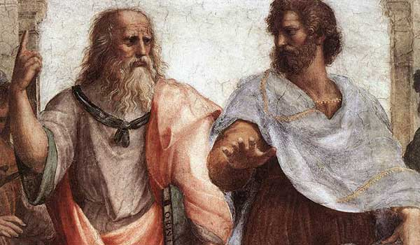

从第一天起，勃学就是从群众中来，到群众中去的哲学，每个人都有自己的解读权，每个人都可以——在不改变主分支的情况下——添加释义、词条，以至消极和积极学派并存。它们二元相持，互相矛盾又相互发展：这是哲学的基本规律。一个只有一种解读的哲学，将会是死如止水的哲学。
勃学的特点是：人人具有参与权
然而，在以立党，江汉臣等人的积极勃学（又称【伪勃学】或成功勃学，左派勃学）与严肃等人的存在主义勃学（又称【中间勃学】，修正主义勃学），以及徐国曦等人的失败勃学（又称【悲观勃学】，右派勃学）的迅速发展和争锋相对之中，许多悬而未决、让人动摇的问题暴露了出来，以至于乍听勃学的人会把勃学与政治波普，李毅贴吧现象，屌丝自嘲等混淆，做出合理的联系但缺乏明智的区分。这些问题的提出恰于时机，而且有的直指其哲学本质，一针见血。因此在我谨在此给出一些我自己所体会的粗浅的回答，还望指正。
勃学并不属于任何一个人，也不是因为任何和一个人而产生、兴起。勃学早就存在于世界，呼之欲出，只不过它一直等待着一群真正的失败者，反思社会与人性，将其精髓与自己的实际生活相结合，把精华哲思整理成册。我作为一个彻底失败的人，有机会把他的一些本质讲出来给大家分享，帮助大家与失败对话。
勃学有以下几个基本定理和原则：
1，“失败”作为一个客体存在于人类社会，是不以人的意志为转移的。你可以获得成功，但是失败的人依然存在；精英话术只不过选择性无视了他们。
2，失败与成功具有两面性：对社会而言，失败必然存在，而且占据绝大多数，这是因为资源有限与人类社会制度设计的本质缺陷造成的。对个人而言，失败和成功是你的主观感受；你可以觉得自己很失败，但不妨碍别人觉得你成功；或者你可以觉得自己很成功，但不能阻止别人揭穿你的失败。因此，勃学的理论适用性和你是一本还是100本无关。不过，个人感受和社会现实要逐渐结合，不可以有太大脱节，这是一个不断自我认知调整的过程。勃学的基础是建立在社会失败理论之上的，然而他服务的对象则是个人。
3，勃学“破”的问题：勃学是武装失败人士头脑的精神武器。勃学应当帮助失败人士首先认清失败现实，其次是学会解构由成功人士精英等构造的精神幻境，最后达到自我解放的目的。精神幻境有很多个，成功学仅仅是其一。精神幻境的构造是成功人士、精英等为了继续巩固社会资源分配制度构建的。失败人士不应该无知地安于奴役，而应该找到自己的意义。这就好像一只被家养的猫，在无知地情况下，它每天安于主人的玩弄。而一旦觉醒，这只猫将不再是任人调戏的宠物。在商品社会下，商业宣传，营销就是精神幻境，而失败人士就是这只猫，被不同的金钱势力玩弄着，滋滋滋送钱，最后却一事无成。失败人士要认识到自己的处境，并且解构这个精神幻境，最后联合起来，证明自己的力量与做宠物以外的存在意义。
4，勃学“立”的问题：勃学也是一门付诸于行动的哲学，这与他的来源：来自于群众生活，来自于失败人士的困境是密不可分的。勃学的生命力在于解决实际问题。然而，关于勃学的行动存在消极，积极，中间三派。
消极派主张，全球失败人士只有同步ZS，才能真正从物理、物质上解构了成功人士的统治，达到全球制度设计和资源分配的合理化，并且让成功人士认识到自己的力量。这一步又分为精神和物理ZS两种。具体的解释是，精神ZS是彻底断绝自己的商业欲望，再也不做商业势力的玩物，又可以叫出世。物理ZS是彻底断绝自己的物理基础，具体表现为绝育，绝种，投胎。同步ZS的理论具有很多可玩味之处，其中一点就是个人不可以脱离组织先行ZS。另外，同步ZS仪的研制，也面临很多挑战；鉴于失败人士的特点，这个ZS仪的研发，很可能会以失败告终。
积极派主张，全球失败人士果断拒绝成为商业社会资本愚民统治下的奴役，在精神觉醒后自我救赎，通过自学，努力发奋，找到真正的导师（例如江汉臣所指出的），最后仍然获得世俗意义上的成功。然而积极派面临的一个急迫问题就是，如何区分成功人士和伪成功人士，从而避免自己变成自己奋而反抗的那个人呢？据我所知，这一理论问题尚未得到解决。并且，积极派容易被人误认为是精英话术、精神鸡汤、变相偶像崇拜。积极派虽然有一定的理论基础，但和勃学的根本起源：失败人士的距离有越走越远的趋势，不过却符合现世中，普通失败人士的基本诉求：过上更好的生活，自己也能开live。因此，积极派可以说是勃学实践理论里面的修正主义，又可以叫做入世。
中间派主张，是结合了精神ZS和入世成功两派所走的中间路线。既保留了勃学来源于失败人士的内核，又吸取了成功的世俗意义。但这里，中间派主张的世俗又要比开live高明一点，回归到了传统的寻找自我，自我提高的“精神成功”的道路。这一派的主张者主要是严肃。
然而，勃学实践的原教旨主义，则是全球失败人士同步ZS。因为原教旨认为，只有把问题本身消灭了，问题才会被解决。否则，失败人士将会源源不绝，苦难与罪恶将永远不会被抹去。
5，勃学的根源和理论基础：
正如上文所说，勃学起源自人类社会与生俱来的失败客体，服务于无法摆脱自己失败客体的失败人士。失败的定义是主观的，但也要和社会资源分配取得对应。人类社会制度的构建存在缺陷，失败，则是其中的癌症。这主要是人类是单个体意识生物，无法真正做到群体同理和群体通感，因此私有制成为社会进步的基础，为了进步就必须追求个人回报，而为了极少数人的个人回报就必然产生他人的失败。现代社会收入差距的指数化发展很好地说明了这一点。
失败人士的觉醒、联合将会完成癌症的自我实现；而人类的进化可能则必须等到未来实现群体同理与通感实现之后，才能达到。当然，这一部分内容过于超前和脱离现实，现阶段，服务于成功的修正主义勃学将会大行其道。